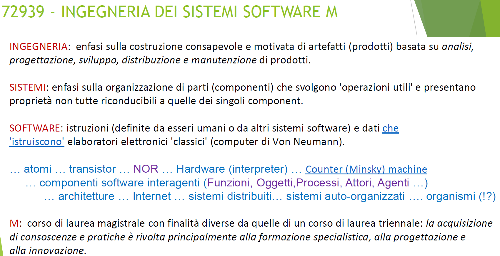

Introduzione¶
{kind=link}
Contenuti del corso¶
Riportiamo qui quanto si legge nel Sito Web del corso :
Al termine del corso lo studente:
è in grado di impostare processi di sviluppo cooperativo del software basati su approcci agili (in particolare SCRUM) avvalendosi anche di modelli eseguibili, espressi mediante meta-modelli custom;
è’ in grado di progettare e sviluppare sistemi software e relativi piani di testing in modo incrementale ed evolutivo, partendo dal problema e dal dominio applicativo piuttosto che dalla tecnologia realizzativa, attraverso la definizione di modelli eseguibili dell’analisi dei requisiti e dell’analisi del problema;
è in grado di valutare in modo critico le continua evoluzione delle tecnologie informatiche, sia a livello computazionale, sia livello di sviluppo-software, acquisendo conoscenze teorico-operative su linguaggi, metododologie e strumenti quali Kotlin, Gradle, SCRUM, SpringBoot, Devops, Docker;
è in grado di comprendere il ruolo dei diversi stili di architetture software (layers, client-server, pipeline, microkernel, service-based, event-driven, space-based, microservices) e di come scegliere lo stile architetturale più opportuno per i diversi sotto-sistemi individuati;
è in grado di affrontare l’analisi, il progetto e la costruzione di applicazioni distribuite ed eterogenee di tipo proattivo e/o reattivo (unitamente a loro possibili piattaforme di sviluppo e di supporto run-time) con particolare riferimento a modelli computazionali a scambio di messaggi e ad eventi;
è in grado di realizzare le interazioni a scambio di messaggi tra componenti distribuiti utilizzando modelli logici di alto livello e implementazioni basate su protocolli diversi (TCP, UDP, HTTP, CoAP, MQTT);
è in grado di comprendere come sia possibile progettare e costruire ambienti di sviluppo custom capaci di generazione automatica di codice (Software Factories in ‘ecosistemi’ come Eclipse/IntelliJ), basandosi su Model Driven Software Development (MDSD) e sull’uso di Domain Specific Languages (DSL);
è in grado di sviluppare applicazioni capaci di combinare aspetti di alto livello (in particolare di AI) con aspetti di basso livello relativi a dispositivi di Internet of Things (IOT), utilizzando sia ambienti virtuali sia dispositivi reali costruibili utilizzando elaboratori a basso costo quali RaspberryPi e Arduino;
è in grado di applicare i concetti, i dispositivi, e gli strumenti sviluppati in modo concreto ed operativo durante il corso per lo sviluppo di una applicazione finale che utilizza uno o più dispositivi IOT ‘situati’, con particolare riferimento a Differental Drive Robots (DDR) con sensori che possono agire in modo relativamente autonomo in diversi ambienti virtuali o reali, senza modificare il software che esprime la ‘business logic’ del problema.
Pe raggiungere questi obiettivi, il corso 2021-2022 si articolerà in tre fasi:
FASE1¶
Dalla OOP ai sistemi software distribuiti eterogenei a scambio di messggi.
Sviluppo di un sistema basato su un PC e su un RaspberryPi uando TCP e seguendo un processo di sviluppo agile ed evolutivo (ispirato a SCRUM) di tipo bottom-up.
Primi approfondimenti sulla fase di analisi dei requisiti e sulla analisi del problema. Il ruolo della architettura logica (come artefatto della analisi) per l’analisi dei rischi e per la pianificazione dei lavori.
Il ruolo del Testing e della pianificazione di test automatizzabili (con JUnit).
Refactoring del sistema a fronte dell’uso di altri protocolli: MQTT e CoAP.
Come rendere il software applicativo indipendente dal protocollo.
Come dotare l’applicazione di una WebGui usando SpringBoot.
Costruzione di un primo prototipo e suo deployment.
Questa fase verrà svolta alternando considerazioni teorico-metodologiche alla costruzione effettiva di prodotti software, articolato in diversi SPRINT, con autovalutazione del lavoro svolto, nel quadro delle Sprint review.
Tutto il software sviluppato nelle tre fasi sarà utile per l’applicazione finale
FASE2¶
Degli oggetti ad attori che interagiscono a messaggi.
Il modello di programmazione a scambio di messaggi portato a livello di componenti.
Introduzione al linguaggio Kotlin.
Dalle coroutine Kotlin agli attori Kotlin.
Da attori message-driven ad attori message-based che operano come automi a stati finiti.
Definizione di una infrastruttura per attori come supporto alla costruzione di software distribuiti ed eterogeni.
FASE3¶
Da bottom-up a top-down: il ruolo dei modelli.
Definizione di una linguaggio/metamodello custom (Qakctor) per la costruzione di sistemi basati su attori
Il vantaggio dell’uso di modelli eseguibili nelle fasi di analisi dei requisiti e del problema e come premessa per l’abbattimento dei costi (e degli imprevisti) di produzione.
Applicazione di quanto sviluppato per lo sviluppo incrementale di una applicazione finale IOT che utilizza robot reali, costruiti estendendo il sistema della FASE1.
{kind=link}
Materiale didattico¶
Sito Web del corso: https://www.unibo.it/it/didattica/insegnamenti/insegnamento/2021/468003
GITHUB del corso: https://github.com/anatali/issLab2022
Documento template2022: costituisce un punto di riferimento ‘process agnostic’, cioè non indica il processo di sviluppo che adottiamo per costruirlo.
Alcuni Libri importanti/utili
Video tema finale studenti (Panopto) VideoStudenti
Primi passi operativi¶
Su PC¶
Installare GIT
Clonare https://github.com/anatali/issLab2022 in una directory vuota e.g. C:/…/iss2022
Installare Gradle
Installare IntelliJ
Installare Eclipse IDE for Java and DSL Developers (2021 06)
Installare Docker
Installare Node.js
Su RaspberryPi¶
Acquisire RaspberryPi 3 Model B+,
Sarebbe bene acquisire anche HC-SR04 Distance Sensor e qualche Led che useremo nella FASE1
Al termine della FASE1 faremo anche uso di una (usb) WebCam
Per il software si veda RaspberrySoftware (Installazione-base 2022)
Per i robot si veda robot reali
Valutazione finale¶
Dal Sito Web del corso leggiamo:
Le attività di laboratorio sono intrinsecamente connesse in modo continuo a una autovalutazione del lavoro svolto da parte di ogni singolo studente.
Al termine del corso, viene proposto un tema di progetto come naturale punto di sintesi delle attività svolte, da affrontare in due fasi.
La prima fase inizia con la pubblicazione di un testo di requisiti per la costruzione di un prototipo La costruzione del prototipo mira a verificare il raggiungimento di adeguate abilità teorico/pratiche e può essere effettuata in modo individuale o in un gruppo di non più di tre studenti.
Al termine di questa fase seguirà una una discussione individuale orale sul lavoro svolto, volta a valutare il livello di conoscenza, consapevolezza e di autonomia analitico/progettuale del singolo studente.
In questa fase lo studente è invitato a porre in luce gli aspetti salienti del lavoro svolto e le scelte effettuate alla luce delle nozioni teorico/pratiche apprese durante il corso.
Dettagli sul colloquio orale¶
48 h prima del colloqio, il codice del sistema finale deve essere stato pubblicato sul sito del gruppo, dandone relativa informazione via mail al docente.
Il giorno del colloquio, ogni gruppo deve avere effettuato gli opportuni preparativi per la/le demo, in modo da essere subito operativo.
L’ordine di presentazione dei gruppi verrà opportunamente stabilito dal docente.
Presentazione (collettiva di gruppo) di una demo ‘live’ del sistema fonale di durata 10-15(max) minuti. La demo deve mostrare la esecuzione di almeno un Test(Plan) automatizzato ritenuto significativo. Per applicazioni che NON usano robot reali NON sono ammessi video, che potrebbero essere invece utili per mostrare il funzionamento di robot reali o di sistemi che includono il RaspberryPi o altri dispositivi
Presentazione (collettiva di gruppo) del progetto del sistema e della sua relazione con la fase di analisi. In questa fase è RICHIESTA la preparazione di 2-3 SLIDES di illustrazione delle architetture con figure e (se ritenuto utile) riferimenti al codice. Al termine di queste fasi il gruppo può raggiungere un punteggio massimo di 27/30.
Domande (per esempi, si veda qui sotto) rivolte dal docente a singole persone, riguardo al prodotto, al progetto e alla analisi del problema /requisiti. Al termine di questa fase una singola persona può raggiungere un punteggio massimo di 29/30.
Altre domande rivolte dal docente a singole persone. Al termine di questa fase, una singola persona può raggiungere un punteggio di 30 e lode.
Possibili domande finali¶
Riportiamo qui un elenco di possibili domande finali durante i colloqui orali:
Abbiamo appena visto il funzionamento della applicazione. Possiamo vedere il progetto? Quale rappresentazione (linguaggio naturale, diagrammi UML, modelli, figure, parti di codice, …) propone per l’esposizione del progetto?
Che forma assume il deliverable di progetto e come è stato prodotto? Vi sono connessioni cone la fase di analisi del problema? E con la fase di analisi dei requisiti?
Come ci può convincere che l’applicazione ‘copre’ tutti i requisiti dati senza doverla eseguire caso per caso?
Può mostrare la struttura della architettura finale del sistema? In quale forma ritiene sia più opportuno presentare l’architettura (o in generale una architettura software) per poterne discutere in modo pragmaticamente utile (cioè non solo in modo vago e discorsivo)?
L’architettura finale è’ stata preceduta dalla definizione di una archittura logica scaturita come deliverable della fase di analisi del problema?
Quali sono i punti salienti che sono stati posti in luce nella fase di analisi del problema? E’ stato evidenziato qualche punto particolamente critico?
E’ possibile, secondo lei, definire un modello eseguibile del sistema già al termine della fase di analisi dei requisiti? Se sì, quali vantaggi se ne potrebbero trarre? Se no, perchè non lo ritiene possibile?
Immagino che come linguaggio di codifica si sia usato principlamente Java e/o Kotlin, insieme a qualche parte scritta in C, C++, Python, JavaScript, etc). Nella fase di analisi del problema, è stato evidenziato qualche macroscopico gap rispetto queste tecnologie? Se sì’ come si è pensato di colmare questo ‘abstraction gap’?
Fino a che punto è utile introdurre diagrammmi UML e per quali scopi? Quali sono le motivazioni che possono indurre una software-house a definire linguaggi (o metamodelli) Domain-specific?
In ambiente industriale non è possibile pensare che sia possibile utilizzare il metamodello QActor. Ma di certo è diffuso l’uso delle librerie. Secondo lei sarebbe possibile affrontare lo sviluppo di applicazioni distribuite usando solo la libreria it.unibo.qakactor-2.5.jar e quelle ad essa necessarie?
Ha trovato un qualche vantaggio nell’uso dei QActor attraverso un linguaggio custom (di ispirazione DSL) dotato di un suo proprio IDE? Ha una idea di come sia stato prodotto l’IDE per i QActor in ambiente Eclipse?
Le mostro l’architettura logica proposta dal gruppo xyz. Trova questa architettura logica concordante con la sua o è possibile evidenziare macroscopiche differenze?. Se nota differenze, le possiamo tollerare o no?
In quale fase (analisi, progetto,…) è stata decisa la natura software dei componenti del sistema; quali sono le motivazioni per queste scelte, e dove sono riportate/discusse?
In quale fase (analisi, progetto,…) è stata decisa la interazione tra i componenti del sistema; quali sono le motivazioni per queste scelte, e dove sono riportate/discusse?
In quale fase dello sviluppo è stata definita una pianificazione dei lavori e una loro ripartizione tra i componenti del team?
In quanti Sprint Scrum-like si è svolto lo sviluppo del software?
Durante la fase di sviluppo, è stato necessario rivedere qualche parte della analisi del problema? In altre parole, sono state trovate situazioni che l’analista non aveva previsto o aveva affrontato in modo incompleto? Se sì, ha qualche esempio? E come si è procduto in questo caso?
E’ possibilie sapere, per ciascun componente del team, di quali aspetti del sistema si è specificatamente occupato? Quando sono state definite e da chi queste ripartizioni dello sviluppo?
In quale fase dello sviluppo sono stati impostati programmi per il testing? Quali tipi di test (unit, integration, …) sono stati pensati e quali effettivamente realizzati?
L’architettura finale del sistema mostra qualche pattern architetturale riconoscibile (ad es. client-server, layer, clean …) e in quale fase dello sviluppo (analisi/progetto) è stato deciso di introdurlo? E perchè? Queste motivazioni sono riportate/discusse in qualche documento?
E’ possibile utilizzare l’applicazione avvalendosi di un Browser? Se no, per quale motivo si e’ esclusa questa possibilità?
Come è stato affrontato il requisito xyz?
Come viene rappresentato lo stato del sistema? E’ uno stato ‘concentrato’, cioè gestito da un solo componente o distribuito tra più componenti? Chi e quando ha preso una decisione in merito a questo punto?
Il sistema finale utilizza solo un DDR robot virtuale. Cosa bisognerebbe fare per utilizzare un robot fisico e quanto tempo sarebbe necessario per il refactoring del sistema?
Il sistema finale e’ stato sviluppato tenendo conto dei principi SOLID? E’ possibile vederne qualche esempio?
E’ stato utilizzato il linguaggio Prolog? Se sì, per quale motivo?
Sono state utilizzate annotazioni Java? Se sì, in quali parti o in quali funzionalità e per quale motivo?
Per un eventuale supporto Web, quale framework è stato utilizzato? Spring o Node/Express? Quali sono le motivazioni della scelta?
Il sistema finale coinvolge anche un RasperryPi? Se si, quale parte del sistema è stato deployed sul Rasp e in quale modo?
E’ stato tentato un deplyoment della applicazione (o di parti di essa) utilizzando docker? E docker-compose? Se sì quali sono i criteri/motivazioni per la ripartizione di parti applicative su docker?